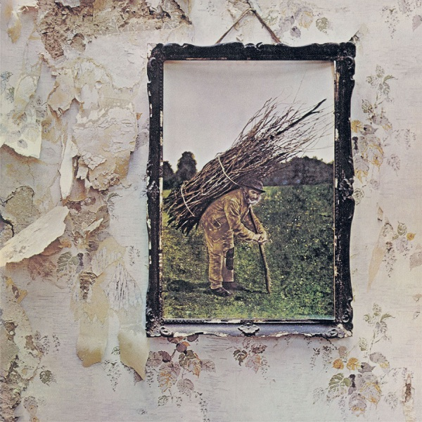

Untitled
Led Zeppelin
Upgrade idea: The 2014 Jimmy Page remaster is the current definitive version. Mobile Fidelity MFSL 1-082 (1981) is the classic audiophile half-speed master if you want a vintage high-fidelity alternative.
- Original release
- 1971
- Pressing year
- 2014
- Country
- Europe
- Format
- Vinyl LP, Album, Reissue, Remastered, Stereo (Gatefold, 180g)
- Label / Cat#
- Atlantic – 8122-79657-7 / Atlantic – 8122796577
- Genres
- Rock
- Styles
- Hard Rock, Blues Rock
- Discogs release
- 6224514
- Discogs master
- 4300
- Apple Music
- Led Zeppelin IV (Remastered)
- Wikipedia
- Untitled
Production notes
Tracklist (Discogs)
| A1 | Black Dog | 4:55 |
| A2 | Rock And Roll | 3:40 |
| A3 | The Battle Of Evermore | 5:51 |
| A4 | Stairway To Heaven | 8:02 |
| B1 | Misty Mountain Hop | 4:38 |
| B2 | Four Sticks | 4:45 |
| B3 | Going To California | 3:32 |
| B4 | When The Levee Breaks | 7:08 |
Tracklist (Apple Music)
| 1 | Black Dog | 4:55 |
| 2 | Rock and Roll | 3:40 |
| 3 | The Battle of Evermore | 5:51 |
| 4 | Stairway to Heaven | 8:02 |
| 5 | Misty Mountain Hop | 4:38 |
| 6 | Four Sticks | 4:45 |
| 7 | Going to California | 3:32 |
| 8 | When the Levee Breaks | 7:08 |
Personnel & credits
- Graphreaks — Design [Co-ordination]
- Peter Grant — Executive-Producer
- Barrington Colby — Illustration [Inside]
- John Davis (4) — Lacquer Cut By
- Jimmy Page — Producer [Produced By]
- Jimmy Page — Remastered By, Reissue Producer
Identifiers
- Barcode: 081227965778 (Scanned from sticker, UPC-A)
- Barcode: 0 81227 96577 8 (Text on sticker)
- Matrix / Runout: BD 16359-01 A1 A1 JD (Runout side A, variant 1)
- Matrix / Runout: BD 16359-01 B1 (Runout side B, variant 1)
- Matrix / Runout: BD 16359-01 A1 A1 JD XIE (Runout side A, variant 2)
- Matrix / Runout: BD 16359-01 B1 1-A (Runout side B, variant 2)
- Matrix / Runout: BD 16359-01 A1 3=V A1 JD (Runout side A, variant 3)
- Matrix / Runout: BD 16359-01 B1 V ∇ + (Runout side B, variant 3)
- Matrix / Runout: BD 16359-01 A1 V=Λ A1 JD (Runout side A, variant 4)
- Matrix / Runout: BD 16359-01 B1 V+V (Runout side B, variant 4)
- Matrix / Runout: BD 16359-01 A1 A1 JD (Runout side A, variant 5)
- Matrix / Runout: BD 16359-01 B1 ∆=V (Runout side B, variant 5)
- Matrix / Runout: BD 16359-01 A1 V=Λ X A1 JD (Runout side A, variant 6)
- Matrix / Runout: BD 16359-01 B1 + X (Runout side B, variant 6)
- Matrix / Runout: BD 16359-01 A1 3Λ= A1 JD (Runout side A, variant 7)
- Matrix / Runout: BD 16359-01 B1 H+Λ (Runout side B, variant 7)
- Matrix / Runout: BD 16359-01 A1 A1 JD T5 (Runout side A, variant 8)
- Matrix / Runout: BD 16359-01 B1 ꞱΛЧ (Runout side B, variant 8)
- Matrix / Runout: BD 16359-01 A1 A1 JD (Runout side A, variant 9)
- Matrix / Runout: BD 16359-01 B1 Ч== (Runout side B, variant 9)
- Matrix / Runout: BD 16359-01 A1 A1 JD x=3 (Runout side A, variant 10)
- Matrix / Runout: BD 16359-01 B1 =4 (Runout side B, variant 10)
- Matrix / Runout: BD 16359-01 A1 3+x A1 JD (Runout side A, variant 11)
- Matrix / Runout: BD 16359-01 B1 ЧIV (Runout side B, variant 11)
- Matrix / Runout: BD 16359-01 A1 A1 JD + 1 (Runout side A, variant 12)
- Matrix / Runout: BD 16359-01 B1 VTX (Runout side B, variant 12)
Notes
Release doesn't feature an explicit title, as with the original issues. It is, however, referred to as "Led Zeppelin IV" in online retailers and such.
180gr vinyl in gatefold sleeve with insert.
Printed on front cover sticker:
"LED ZEPPELIN'S CLASSIC
4th ALBUM ON 180g VINYL
Includes Stairway To Heaven,
Black Dog & Rock And Roll
Remastered & Produced by Jimmy Page
[barcode image
0 81227 96577 8]
8122796577"
Cat# on labels 8122-79657-7
Cat# on sticker on front cover : 8122769577
Manufactured in Germany. (on label)
Made in the EU (insert)
Runouts are etched, any additional etchings such as “^~ꞱΛЧ” can be mirrored, rotated or upside down.
Notes & discrepancies
- Release year differs: your pressing=2014, Apple Music edition=1971. Apple Music typically streams the most recent remaster.
Led Zeppelin IV (officially untitled, commonly known as “Four Symbols” or simply “IV”) is Led Zeppelin’s fourth studio album, released in November 1971 on Atlantic Records. It is widely regarded as one of the greatest rock albums ever made and contains some of the most iconic recordings in rock history: “Black Dog,” “Rock and Roll,” “The Battle of Evermore,” “Going to California,” and “When the Levee Breaks” — and of course “Stairway to Heaven,” arguably the most celebrated rock song ever recorded. The album’s refusal to include the band’s name or title on the cover was a deliberate act of artistic defiance against critics who had questioned their credibility, a gamble that paid off spectacularly.
Jimmy Page’s production is a masterclass in dynamic range — from the acoustic delicacy of “Going to California” and “The Battle of Evermore” to the titanic drum sound of “When the Levee Breaks,” recorded in a stairwell at Headley Grange with John Bonham’s kit placed to maximize natural reverb. That drum sound remains one of the most imitated in rock history.
The 2014 Europe reissue was personally remastered by Jimmy Page from the original analog tape sources — his first comprehensive remaster of the Led Zeppelin catalog. Page was intimately involved in the mastering process, ensuring the sonic character of the original recordings was preserved with maximum fidelity. Pressed on 180-gram vinyl in a gatefold sleeve with insert, with pressing sourced from Germany. The matrix codes
BD 16359-01 A1 JDidentify the cutting engineer as JD at the cutting facility.About this 2014 Europe pressing (Vinyl, LP, Remastered): Atlantic / Swan Song / Rhino catalog 8122-79657-7, 2014 reissue remastered by Jimmy Page. 180-gram vinyl, Made in Germany. Barcode 0081227965778.